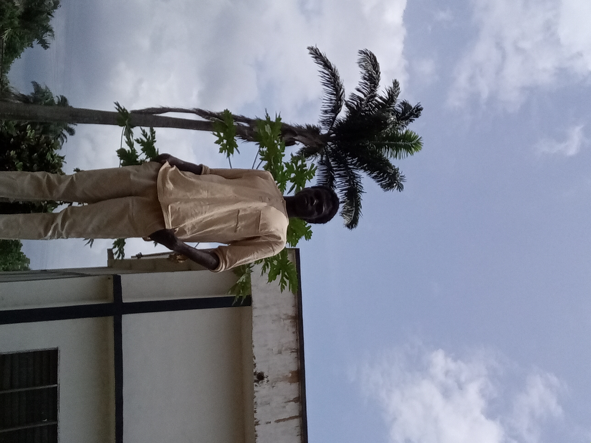

About Me
Hello! I'm Chinonso Echefu, a student at BYU–Idaho studying Web Fundamentals (WDD 130). I enjoy learning about HTML, CSS, and creating responsive, creative websites that look great on all devices!
Hello! I'm Chinonso Echefu, a student at BYU–Idaho studying Web Fundamentals (WDD 130). I enjoy learning about HTML, CSS, and creating responsive, creative websites that look great on all devices!